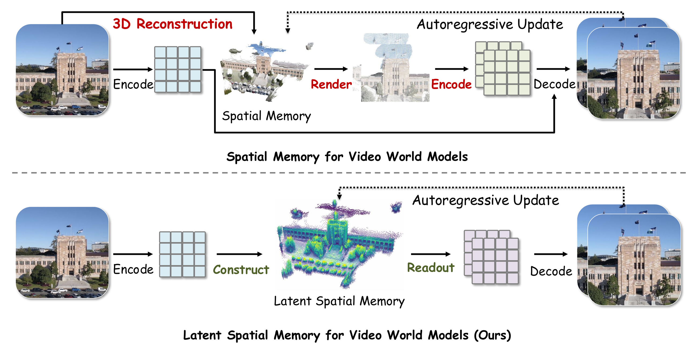
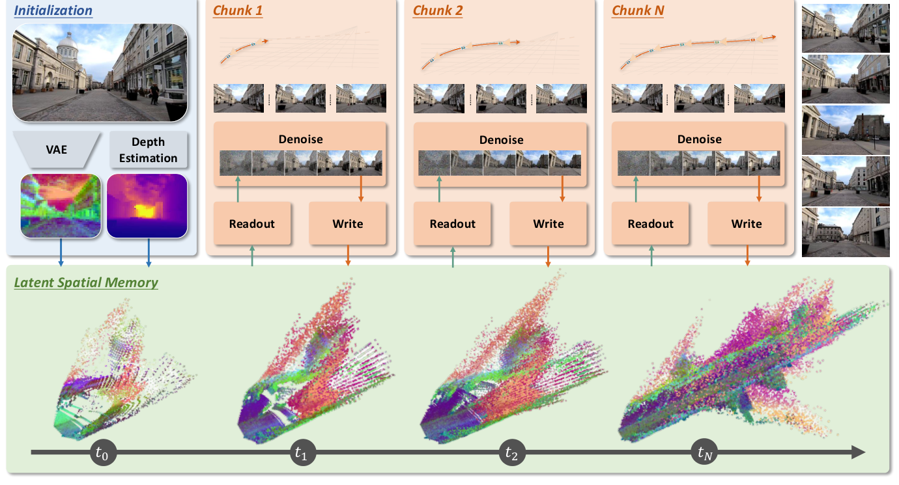
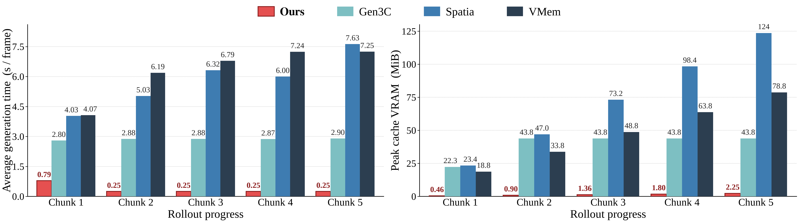

Latent Spatial Memory
for Video World Models
1 Zhejiang University · 2 Microsoft Research · 3 Adelaide University · 4 Monash University * Equal contribution
Promo Video
A short preview of video world modeling with persistent latent spatial memory.
Latent Spatial Memory
Mirage stores static scene content as 3D latent tokens, then reads and updates that cache directly during generation.

Mirage Architecture
Mirage initializes, reads, and updates a persistent latent spatial memory.

Efficiency
Mirage reduces repeated 3D cache rendering while preserving strong world modeling quality.

Qualitative Evaluation
Each row compares the same trajectory and conditioning across Mirage and four baselines.
BibTeX
@article{wang2026mirage,
title = {Mirage: Latent Spatial Memory for Video World Models},
author = {Wang, Weijie and Zhao, Haoyu and Yang, Yifan and Chen, Feng and Zhang, Zeyu and He, Yefei and Duan, Zicheng and Chen, Donny Y. and Yang, Yuqing and Zhuang, Bohan},
journal = {arXiv preprint},
year = {2026}
}